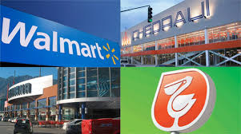

Una de las manifestaciones más evidentes del neoliberalismo capitalista es la apropiación, casi siempre por medio de ventajas otorgadas por el Estado, de los recursos naturales por parte de empresas transnacionales.
Por lo anterior, quizá la crisis del capitalismo es manifiesta más que nunca en los conflictos ambientales, pues es la parte que generalmente el ciudadano de las urbes desconoce, pero es donde es más evidente el saqueo por parte de estas poderosas empresas pese al deterioro ambiental y social de la zona.
En México, el campo ha sufrido en las últimas tres décadas (gracias al modelo neoliberal), un abandono sin precedentes. Y este mismo sector es el que más sufre la apropiación de los recursos naturales por parte de las corporaciones. Como sabrás, en México en el tema de las concesiones de megaproyectos es generalmente donde hay corrupción más notable, ahí los políticos hacen negocios con sus allegados empresarios o bien con directivos extranjeros; la economía así es convertida en un negocio de pocos, y en este círculo, la naturaleza es quizá la más afectada.
En los últimos años miles de campesinos no creen ya en el supuesto progreso de las mega obras como las presas hidráulicas, las mineras, las mega carreteras o a explotación de hidrocarburos, más ahora que se viene el fracking. Por ello, hasta 300 organizaciones de las sociedad civil unirán esfuerzos para exigir solución a los más de 200 conflictos ambientales que existen en el país.
Desde 2012, más de 300 organizaciones han hecho público ante el Tribunal Permanente de los Pueblos la documentación de los casos, no solo de conflictos ambientales, también de la persecución a muchos de los luchadores ambientales. Según parte de su registro, y publicada esta lista por Sin Embargo, estas son las empresas ligadas a mayores estragos ambientales en México:
Pfizer, Suez, Halliburton, Monsanto, Exxon Mobil, Kraftm Compañía Minera Fresnillo, Compañía Minera Nuevo Monte de Zimapán, Geotermoléctrica Los Azufres (Hidalgo, Michoacán), Arcelor Mital (Michoacán), Geotermoeléctrica Humeros en Chignautla en Puebla, Central Termoeléctrica José Aceves Pozos (Sinaloa), Sovay Fluor México (Chihuahua), Ideal Standard (Nuevo León), Empresas Ca Le de Tlaxcala, ADM Bio Productos (Sonora), Minera Bismark (Chihuahua), Pemex-Petroquímica Morelos, Cobre de México (Distrito Federal), Prym Fashion México (Estado de México), Power Sonic (Baja California), Arteva Specialities (Querétaro), Acabados de Calidad Tecate, Aceites, Grasas y Derivados (Jalisco), Vivsil (Querétaro), Enerya (Nuevo León), Austin Bacis (Durango), Productos y Diseños de Mármol (Baja California), Forjas Spicer (Tlaxcala), Balatas Mexicanas (Tamauliaps), Pemex-Complejo Procesador de Gas Matapionche, Layne de México (Sonora), Constructoras OHL y TRADECO, Inmobiliarias Casas Geo y Ara, Sadasi, Caabsa Eagle SA de CV, Cementeras Cruz Azul, Tolteca-Cemex, Lafarge, Clarimex, Cargil, FUD, Teck Comico Ltd,Mineras Esperanza Silver de México, Maquiladoras de diversos corredores industriales, Wall-Mart de México, Soriana, Chedraui, Comercial Mexicana, Oxxo, 7-Eleven, Costco, Office Depot, Office Max, Home Depot y Home Mart.
 ATRÁS
Por lo anterior, quizá la crisis del capitalismo es manifiesta más que nunca en los conflictos ambientales, pues es la parte que generalmente el ciudadano de las urbes desconoce, pero es donde es más evidente el saqueo por parte de estas poderosas empresas pese al deterioro ambiental y social de la zona.
En México, el campo ha sufrido en las últimas tres décadas (gracias al modelo neoliberal), un abandono sin precedentes. Y este mismo sector es el que más sufre la apropiación de los recursos naturales por parte de las corporaciones. Como sabrás, en México en el tema de las concesiones de megaproyectos es generalmente donde hay corrupción más notable, ahí los políticos hacen negocios con sus allegados empresarios o bien con directivos extranjeros; la economía así es convertida en un negocio de pocos, y en este círculo, la naturaleza es quizá la más afectada.
En los últimos años miles de campesinos no creen ya en el supuesto progreso de las mega obras como las presas hidráulicas, las mineras, las mega carreteras o a explotación de hidrocarburos, más ahora que se viene el fracking. Por ello, hasta 300 organizaciones de las sociedad civil unirán esfuerzos para exigir solución a los más de 200 conflictos ambientales que existen en el país.
Desde 2012, más de 300 organizaciones han hecho público ante el Tribunal Permanente de los Pueblos la documentación de los casos, no solo de conflictos ambientales, también de la persecución a muchos de los luchadores ambientales. Según parte de su registro, y publicada esta lista por Sin Embargo, estas son las empresas ligadas a mayores estragos ambientales en México:
Pfizer, Suez, Halliburton, Monsanto, Exxon Mobil, Kraftm Compañía Minera Fresnillo, Compañía Minera Nuevo Monte de Zimapán, Geotermoléctrica Los Azufres (Hidalgo, Michoacán), Arcelor Mital (Michoacán), Geotermoeléctrica Humeros en Chignautla en Puebla, Central Termoeléctrica José Aceves Pozos (Sinaloa), Sovay Fluor México (Chihuahua), Ideal Standard (Nuevo León), Empresas Ca Le de Tlaxcala, ADM Bio Productos (Sonora), Minera Bismark (Chihuahua), Pemex-Petroquímica Morelos, Cobre de México (Distrito Federal), Prym Fashion México (Estado de México), Power Sonic (Baja California), Arteva Specialities (Querétaro), Acabados de Calidad Tecate, Aceites, Grasas y Derivados (Jalisco), Vivsil (Querétaro), Enerya (Nuevo León), Austin Bacis (Durango), Productos y Diseños de Mármol (Baja California), Forjas Spicer (Tlaxcala), Balatas Mexicanas (Tamauliaps), Pemex-Complejo Procesador de Gas Matapionche, Layne de México (Sonora), Constructoras OHL y TRADECO, Inmobiliarias Casas Geo y Ara, Sadasi, Caabsa Eagle SA de CV, Cementeras Cruz Azul, Tolteca-Cemex, Lafarge, Clarimex, Cargil, FUD, Teck Comico Ltd,Mineras Esperanza Silver de México, Maquiladoras de diversos corredores industriales, Wall-Mart de México, Soriana, Chedraui, Comercial Mexicana, Oxxo, 7-Eleven, Costco, Office Depot, Office Max, Home Depot y Home Mart.